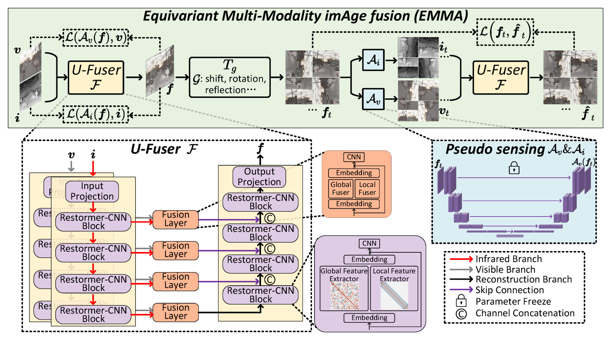
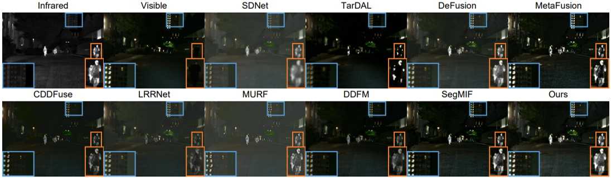
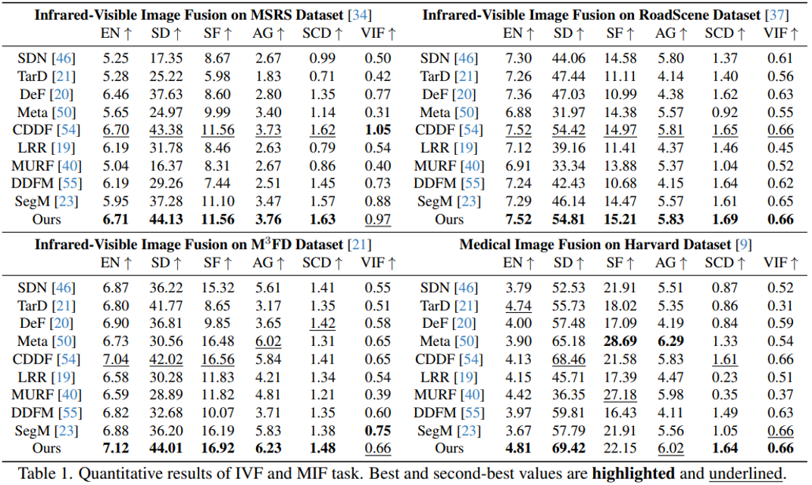
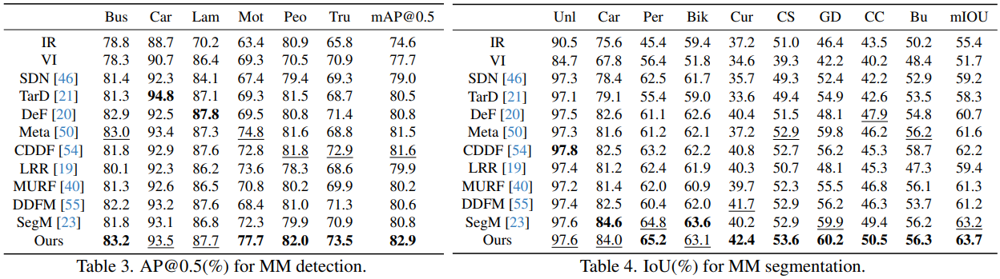

CVPR 2024
EMMA
Equivariant Multi-Modality imAge Fusion
A self-supervised fusion paradigm that senses fused images back into source modalities and enforces the Equivariant Imaging prior.
1Xi'an Jiaotong University
2ETH Zurich
3Shanghai Jiao Tong University
4Nanjing University
5Northwestern Polytechnical University
6Heriot-Watt University
7University of Wurzburg
8INSAIT
Core Idea
Fuse useful evidence by respecting how images are sensed.
Image fusion combines complementary observations into one informative image. Infrared images highlight thermal targets under poor illumination, visible images provide textures and scene details, and medical modalities reveal different anatomical or functional responses. EMMA turns this into a self-supervised training signal instead of requiring an unavailable fused-image label.
01
Motivation
No fused-image ground truth
Training cannot rely on paired source images and a perfect fused target.
Direct source losses are mismatched
Comparing a fused image directly with infrared or visible images ignores modality manifolds.
No real super sensor exists
A single sensor cannot observe every modality-specific cue simultaneously.
Generic priors should be domain-light
Fusion should not depend only on hand-crafted assumptions for one dataset or modality.
02
EMMA Contributions
Pseudo-sensing loss
Learn sensing modules that map fused images back to source-domain measurements.
Equivariant fusion loop
Transform fused images, pseudo-sense them, and require re-fusion to stay consistent.
U-Fuser architecture
Transformer-CNN blocks capture global dependencies and local texture details.
Unified IVF and MIF results
One paradigm supports infrared-visible fusion, medical fusion, detection, and segmentation.
Method
Self-supervised equivariant fusion pipeline

Fuse
U-Fuser receives infrared and visible images and predicts the fused image with multi-scale global-local features.
Pseudo-Sense
Frozen sensing modules reconstruct modality-specific measurements from the fused image, making the loss live in source domains.
Enforce Equivariance
Shift, rotation, and reflection create virtual sensing responses; re-fusion must match the transformed fused image.
Architecture
U-Fuser carries the deployment path.
Transformer-CNN blocks
Global feature extraction and local texture modeling are combined inside each fusion scale.
Multi-scale fusion layers
Infrared and visible branches are fused across encoder and decoder paths with skip connections.
Frozen pseudo-sensors
Pseudo-sensing modules train the fusion model, then are discarded during testing.
Single-branch inference
The released model uses only U-Fuser to produce fusion images efficiently at test time.
Qualitative Results
Infrared-visible and medical fusion examples

comparison panel
RoadScene: Infrared-Visible Fusion
EMMA preserves thermal targets while keeping visible textures and natural scene structure.
Quantitative Results
Strong performance across Infrared-visible fusion and medical fusion.

Downstream Recognition
Fusion images that help perception models

mAP@0.5 with fused images.
mIOU with fused images.
Release
Everything needed to reproduce EMMA
Reproducible EMMA Release
We release the trained fusion checkpoint together with the pseudo-sensing checkpoints used by the self-supervised training loop. The inference path remains compact: deploy U-Fuser for fusion, and use the pseudo-sensing weights when reproducing the EMMA training protocol.
released checkpoints
fusion + pseudo-sensing
Released for direct image fusion inference.
Released for reproducing EMMA self-supervision.
Fusion and Pseudo-Sensing checkpoints are open-sourced with the project release.
Citation
Reference the CVPR 2024 paper
@InProceedings{Zhao_2024_CVPR,
author = {Zhao, Zixiang and Bai, Haowen and Zhang, Jiangshe and Zhang, Yulun and Zhang, Kai and Xu, Shuang and Chen, Dongdong and Timofte, Radu and Van Gool, Luc},
title = {Equivariant Multi-Modality Image Fusion},
booktitle = {Proceedings of the IEEE/CVF Conference on Computer Vision and Pattern Recognition (CVPR)},
month = {June},
year = {2024},
pages = {25912-25921}
}